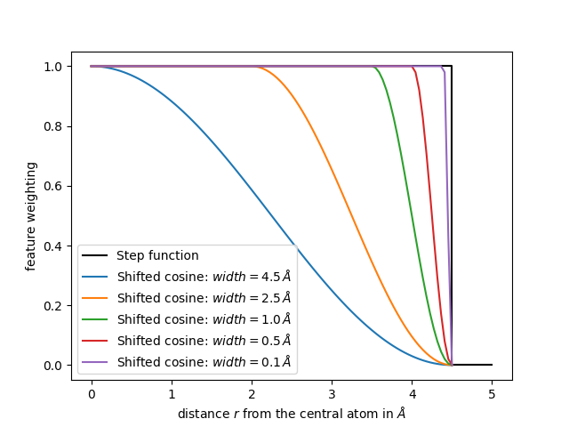
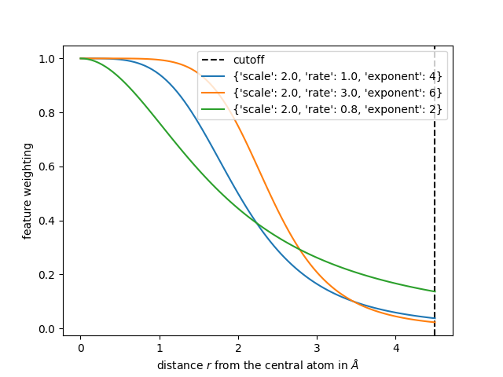
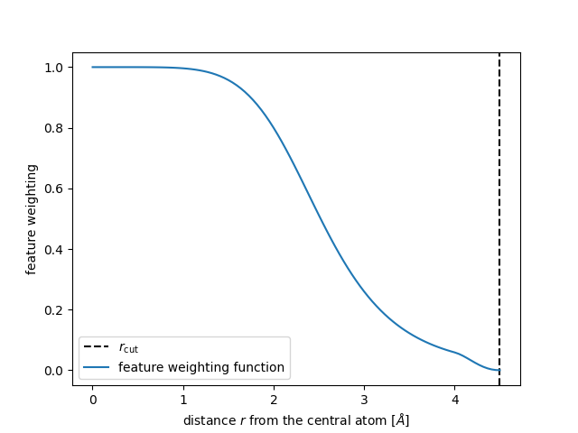

Note
Go to the end to download the full example code.
Changing SOAP hyper parameters¶
In the first tutorial we show how to calculate a descriptor using default hyper parameters. Here we will look at how the change of some hyper parameters affects the values of the descriptor. The definition of every hyper parameter is given in the Calculator reference and background on the mathematical foundation of the spherical expansion is given in the Explanations section.
We use the same molecular crystals dataset as in the first
tutorial which can downloaded from our
website.
# We first import the crucial packages, load the dataset using chemfiles and
# save the first frame in a variable.
import time
import chemfiles
import matplotlib.pyplot as plt
import numpy as np
from rascaline import SphericalExpansion
with chemfiles.Trajectory("dataset.xyz") as trajectory:
frames = [frame for frame in trajectory]
frame0 = frames[0]
Increasing max_radial and max_angular¶
As mentioned above changing max_radial has an effect on the accuracy of
the descriptor and on the computation time. We now will increase the number of
radial channels and angular channels. Note, that here we directly pass the
parameters into the SphericalExpansion class without defining a
HYPERPARAMETERS dictionary like we did in the previous tutorial.
calculator_ext = SphericalExpansion(
cutoff=4.5,
max_radial=12,
max_angular=8,
atomic_gaussian_width=0.3,
center_atom_weight=1.0,
radial_basis={"Gto": {"spline_accuracy": 1e-6}},
cutoff_function={"ShiftedCosine": {"width": 0.5}},
radial_scaling={"Willatt2018": {"scale": 2.0, "rate": 1.0, "exponent": 4}},
)
descriptor_ext = calculator_ext.compute(frame0)
Compared to our previous set of hypers we now have 144 blocks instead of 112 because we increased the number of angular channels.
print(len(descriptor_ext.blocks()))
144
The increase of the radial channels to 12 is reflected in the shape of the 0th block values.
print(descriptor_ext.block(0).values.shape)
(8, 1, 12)
Note that the increased number of radial and angular channels can increase the accuracy of your representation but will increase the computational time transforming the coordinates into a descriptor. A very simple time measurement of the computation shows that the extended calculator takes more time for the computation compared to a calculation using the default hyper parameters
start_time = time.time()
calculator_ext.compute(frames)
print(f"Extended hypers took {time.time() - start_time:.2f} s.")
# using smaller max_radial and max_angular, everything else stays the same
calculator_small = SphericalExpansion(
cutoff=4.5,
max_radial=9,
max_angular=6,
atomic_gaussian_width=0.3,
center_atom_weight=1.0,
radial_basis={"Gto": {"spline_accuracy": 1e-6}},
cutoff_function={"ShiftedCosine": {"width": 0.5}},
radial_scaling={"Willatt2018": {"scale": 2.0, "rate": 1.0, "exponent": 4}},
)
start_time = time.time()
calculator_small.compute(frames)
print(f"Smaller hypers took {time.time() - start_time:.2f} s.")
Extended hypers took 0.08 s.
Smaller hypers took 0.07 s.
Reducing the cutoff and the center_atom_weight¶
The cutoff controls how many neighboring atoms are taken into account for a descriptor. By decreasing the cutoff from 6 Å to 0.1 Å fewer and fewer atoms contribute to the descriptor which can be seen by the reduced range of the features.
for cutoff in [6.0, 4.5, 3.0, 1.0, 0.1]:
calculator_cutoff = SphericalExpansion(
cutoff=cutoff,
max_radial=6,
max_angular=6,
atomic_gaussian_width=0.3,
center_atom_weight=1.0,
radial_basis={"Gto": {"spline_accuracy": 1e-6}},
cutoff_function={"ShiftedCosine": {"width": 0.5}},
radial_scaling={"Willatt2018": {"scale": 2.0, "rate": 1.0, "exponent": 4}},
)
descriptor = calculator_cutoff.compute(frame0)
print(f"Descriptor for cutoff={cutoff} Å: {descriptor.block(0).values[0]}")
Descriptor for cutoff=6.0 Å: [[ 0.73193479 -0.29310529 0.20099337 -0.01685146 0.10192235 -0.00619106]]
Descriptor for cutoff=4.5 Å: [[ 0.88696541 -0.27211242 0.12400786 0.03004326 0.13265605 0.00631962]]
Descriptor for cutoff=3.0 Å: [[ 0.99735843 0.02421642 -0.01582201 0.07692315 0.0739584 0.02262702]]
Descriptor for cutoff=1.0 Å: [[0.47066472 0.51914099 0.60560181 0.34760844 0.14044963 0.03946593]]
Descriptor for cutoff=0.1 Å: [[0.00157192 0.00240957 0.00345497 0.00925635 0.00025653 0.02589691]]
For a cutoff of 0.1 Å there is no neighboring atom within the cutoff and
one could expect all features to be 0. This is not the case because the
central atom also contributes to the descriptor. We can vary this contribution
using the center_atom_weight parameter so that the descriptor finally is 0
everywhere.
..Add a sophisticated and referenced note on how the center_atom_weight
could affect ML models.
for center_weight in [1.0, 0.5, 0.0]:
calculator_cutoff = SphericalExpansion(
cutoff=0.1,
max_radial=6,
max_angular=6,
atomic_gaussian_width=0.3,
center_atom_weight=center_weight,
radial_basis={"Gto": {"spline_accuracy": 1e-6}},
cutoff_function={"ShiftedCosine": {"width": 0.5}},
radial_scaling={"Willatt2018": {"scale": 2.0, "rate": 1.0, "exponent": 4}},
)
descriptor = calculator_cutoff.compute(frame0)
print(
f"Descriptor for center_weight={center_weight}: "
f"{descriptor.block(0).values[0]}"
)
Descriptor for center_weight=1.0: [[0.00157192 0.00240957 0.00345497 0.00925635 0.00025653 0.02589691]]
Descriptor for center_weight=0.5: [[0.00078596 0.00120479 0.00172749 0.00462817 0.00012826 0.01294846]]
Descriptor for center_weight=0.0: [[0. 0. 0. 0. 0. 0.]]
Choosing the cutoff_function¶
In a naive descriptor approach all atoms within the cutoff are taken in into
account equally and atoms without the cutoff are ignored. This behavior is
implemented using the cutoff_function={"Step": {}} parameter in each
calculator. However, doing so means that small movements of an atom near the
cutoff result in large changes in the descriptor: there is a discontinuity in
the representation as atoms enter or leave the cutoff. A solution is to use
some smoothing function to get rid of this discontinuity, such as a shifted
cosine function:
where \(r_\mathrm{c}\) is the cutoff distance and \(w\) the width. Such smoothing function is used as a multiplicative weight for the contribution to the representation coming from each neighbor one by one
The following functions compute such a shifted cosine weighting.
def shifted_cosine(r, cutoff, width):
"""A shifted cosine switching function.
Parameters
----------
r : float
distance between neighboring atoms in Å
cutoff : float
cutoff distance in Å
width : float
width of the switching in Å
Returns
-------
float
weighting of the features
"""
if r <= (cutoff - width):
return 1.0
elif r >= cutoff:
return 0.0
else:
s = np.pi * (r - cutoff + width) / width
return 0.5 * (1.0 + np.cos(s))
Let us plot the weighting for different widths.
r = np.linspace(1e-3, 4.5, num=100)
plt.plot([0, 4.5, 4.5, 5.0], [1, 1, 0, 0], c="k", label=r"Step function")
for width in [4.5, 2.5, 1.0, 0.5, 0.1]:
weighting_values = [shifted_cosine(r=r_i, cutoff=4.5, width=width) for r_i in r]
plt.plot(r, weighting_values, label=f"Shifted cosine: $width={width}\\,Å$")
plt.legend()
plt.xlabel(r"distance $r$ from the central atom in $Å$")
plt.ylabel("feature weighting")
plt.show()

From the plot we conclude that a larger width of the shifted cosine
function will decrease the feature values already for smaller distances r
from the central atom.
Choosing the radial_scaling¶
As mentioned above all atoms within the cutoff are taken equally for a
descriptor. This might limit the accuracy of a model, so it is sometimes
useful to weigh neighbors that further away from the central atom less than
neighbors closer to the central atom. This can be achieved by a
radial_scaling function with a long-range algebraic decay and smooth
behavior at \(r \rightarrow 0\). The 'Willatt2018' radial scaling
available in rascaline corresponds to the function introduced in this
publication:
where \(c\) is the rate, \(r_0\) is the scale parameter and
\(m\) the exponent of the RadialScaling function.
The following functions compute such a radial scaling.
def radial_scaling(r, rate, scale, exponent):
"""Radial scaling function.
Parameters
----------
r : float
distance between neighboring atoms in Å
rate : float
decay rate of the scaling
scale : float
scaling of the distance between atoms in Å
exponent : float
exponent of the decay
Returns
-------
float
weighting of the features
"""
if rate == 0:
return 1 / (r / scale) ** exponent
if exponent == 0:
return 1
else:
return rate / (rate + (r / scale) ** exponent)
In the following we show three different radial scaling functions, where the first one uses the parameters we use for the calculation of features in the first tutorial.
r = np.linspace(1e-3, 4.5, num=100)
plt.axvline(4.5, c="k", ls="--", label="cutoff")
radial_scaling_params = {"scale": 2.0, "rate": 1.0, "exponent": 4}
plt.plot(r, radial_scaling(r, **radial_scaling_params), label=radial_scaling_params)
radial_scaling_params = {"scale": 2.0, "rate": 3.0, "exponent": 6}
plt.plot(r, radial_scaling(r, **radial_scaling_params), label=radial_scaling_params)
radial_scaling_params = {"scale": 2.0, "rate": 0.8, "exponent": 2}
plt.plot(r, radial_scaling(r, **radial_scaling_params), label=radial_scaling_params)
plt.legend()
plt.xlabel(r"distance $r$ from the central atom in $Å$")
plt.ylabel("feature weighting")
plt.show()

/home/runner/work/rascaline/rascaline/python/rascaline/examples/understanding-hypers.py:304: MatplotlibDeprecationWarning: Passing label as a length 3 sequence when plotting a single dataset is deprecated in Matplotlib 3.9 and will error in 3.11. To keep the current behavior, cast the sequence to string before passing.
plt.plot(r, radial_scaling(r, **radial_scaling_params), label=radial_scaling_params)
/home/runner/work/rascaline/rascaline/python/rascaline/examples/understanding-hypers.py:307: MatplotlibDeprecationWarning: Passing label as a length 3 sequence when plotting a single dataset is deprecated in Matplotlib 3.9 and will error in 3.11. To keep the current behavior, cast the sequence to string before passing.
plt.plot(r, radial_scaling(r, **radial_scaling_params), label=radial_scaling_params)
/home/runner/work/rascaline/rascaline/python/rascaline/examples/understanding-hypers.py:310: MatplotlibDeprecationWarning: Passing label as a length 3 sequence when plotting a single dataset is deprecated in Matplotlib 3.9 and will error in 3.11. To keep the current behavior, cast the sequence to string before passing.
plt.plot(r, radial_scaling(r, **radial_scaling_params), label=radial_scaling_params)
In the end the total weight is the product of cutoff_function and the
radial_scaling
The shape of this function should be a “S” like but the optimal shape depends on each dataset.
def feature_scaling(r, cutoff, width, rate, scale, exponent):
"""Features Scaling factor using cosine shifting and radial scaling.
Parameters
----------
r : float
distance between neighboring atoms
cutoff : float
cutoff distance in Å
width : float
width of the decay in Å
rate : float
decay rate of the scaling
scale : float
scaling of the distance between atoms in Å
exponent : float
exponent of the decay
Returns
-------
float
weighting of the features
"""
s = radial_scaling(r, rate, scale, exponent)
s *= np.array([shifted_cosine(ri, cutoff, width) for ri in r])
return s
r = np.linspace(1e-3, 4.5, num=100)
plt.axvline(4.5, c="k", ls="--", label=r"$r_\mathrm{cut}$")
radial_scaling_params = {}
plt.plot(
r,
feature_scaling(r, scale=2.0, rate=4.0, exponent=6, cutoff=4.5, width=0.5),
label="feature weighting function",
)
plt.legend()
plt.xlabel(r"distance $r$ from the central atom $[Å]$")
plt.ylabel("feature weighting")
plt.show()

Finally we see how the magnitude of the features further away from the central
atom reduces when we apply both a shifted_cosine and a radial_scaling.
calculator_step = SphericalExpansion(
cutoff=4.5,
max_radial=6,
max_angular=6,
atomic_gaussian_width=0.3,
center_atom_weight=1.0,
radial_basis={"Gto": {"spline_accuracy": 1e-6}},
cutoff_function={"Step": {}},
)
descriptor_step = calculator_step.compute(frame0)
print(f"Step cutoff: {str(descriptor_step.block(0).values[0]):>97}")
calculator_cosine = SphericalExpansion(
cutoff=4.5,
max_radial=6,
max_angular=6,
atomic_gaussian_width=0.3,
center_atom_weight=1.0,
radial_basis={"Gto": {"spline_accuracy": 1e-6}},
cutoff_function={"ShiftedCosine": {"width": 0.5}},
)
descriptor_cosine = calculator_cosine.compute(frame0)
print(f"Cosine smoothing: {str(descriptor_cosine.block(0).values[0]):>92}")
calculator_rs = SphericalExpansion(
cutoff=4.5,
max_radial=6,
max_angular=6,
atomic_gaussian_width=0.3,
center_atom_weight=1.0,
radial_basis={"Gto": {"spline_accuracy": 1e-6}},
cutoff_function={"ShiftedCosine": {"width": 0.5}},
radial_scaling={"Willatt2018": {"scale": 2.0, "rate": 1.0, "exponent": 4}},
)
descriptor_rs = calculator_rs.compute(frame0)
print(f"cosine smoothing + radial scaling: {str(descriptor_rs.block(0).values[0]):>50}")
Step cutoff: [[ 0.87386968 -0.24311082 0.12200976 0.41940912 0.80347292 0.26559202]]
Cosine smoothing: [[ 0.8728401 -0.24114056 0.11656053 0.43711707 0.77838565 0.22482755]]
cosine smoothing + radial scaling: [[ 0.88696541 -0.27211242 0.12400786 0.03004326 0.13265605 0.00631962]]